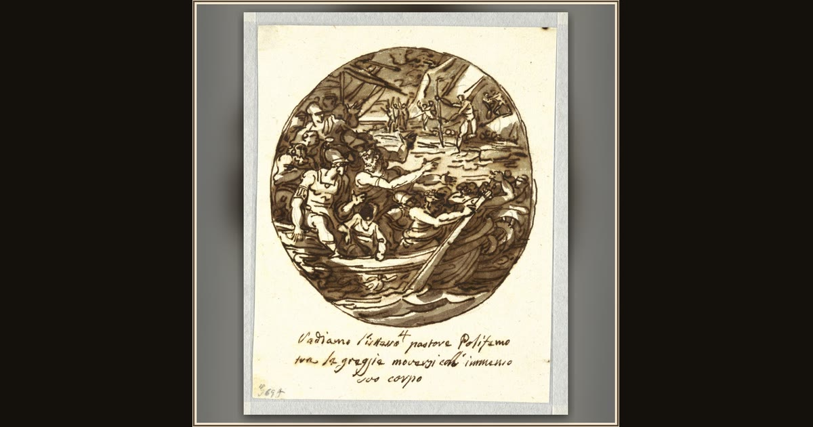

Ulysses Escapes the Cyclops's Cave
Felice Giani · late 18th–early 19th century · Cooper Hewitt, Smithsonian Design Museum · New York, USA
In Giani's round sketch, Ulysses slips out of the Cyclops's cave past the giant's woolly flock — escaping by cleverness, not force. Explore its place in Book IX of the Odyssey.